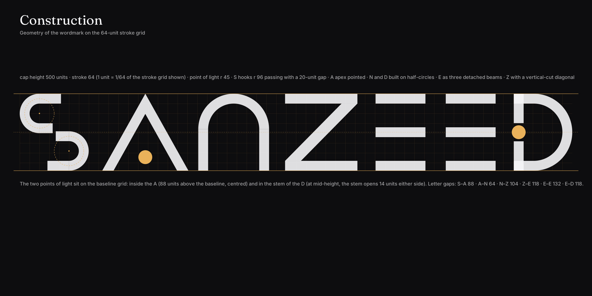

Chapter06
Logo construction.
The wordmark is not typeset; it is drawn. Every stroke is generated from a handful of parameters in one Python master, so the geometry is exact in every export.
- 6.1Geometry on the 64-unit grid
- 6.2Parameters and the master file
Sanzeed Mirza · Experiential Design ConsultantBrand Guidelines · Version 1.0 · November 2026
6.1 · Geometry
Drawn on a 64-unit grid.
The construction sheet from 02_LOGO_SYSTEM/Guidelines. Cap height 500; stroke 64; point of light r 45; S hooks r 96; N and D on half-circles; E as three detached beams; Z with a vertical-cut diagonal.

| Parameter | Value | What it sets |
|---|---|---|
| CAP | 500 | Cap height; the unit everything else is measured against |
| W | 64 | Monoline stroke weight (the grid shown) |
| DOT_R | 45 | Radius of the points of light (0.7 × stroke) |
| S_R · S_D | 96 · 192 | S hook centreline radius; offset between the two hooks (they pass with a 20-unit gap) |
| A_W · N_W · Z_W | 560 · 460 · 470 | A outer width (apex pointed) · N arch width (half-circle) · Z width (vertical-cut diagonal) |
| E_W · D_W | 324 · 380 | E as three detached beams · D built on a half-circle, stem broken 14 units around the point |
| Gaps | S–A 88 · A–N 64 · N–Z 104 · Z–E 118 · E–E 132 · E–D 118 | Letter spacing in units; never altered |
| Points | A: 88 above baseline · D: mid-height | The two points sit on the baseline grid, inside the A and in the stem of the D |
| Descriptor | Inter Tight 600, outlined | “EXPERIENTIAL DESIGN CONSULTANT”, justified to the wordmark width in the lockups |
| Simplified | stroke 84 | Small-size variant: heavier stroke, larger dots, same construction |
The master. 15_SOURCE_FILES/Project_Files/logo-builder/build_logo.py writes the per-stroke construction SVGs (02_LOGO_SYSTEM/Source_Files/, every stroke a named sub-path); export_logo.py unions them with Inkscape and writes SVG, PDF, EPS, PNG, JPG, WebP, favicons and social tiles. Change a parameter, re-run, and the whole family regenerates. Never redraw a letter by hand.